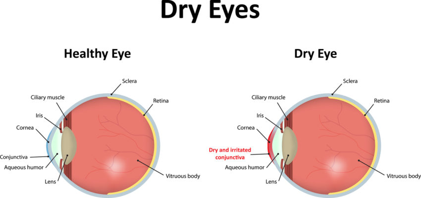

If your eyes feel worse this winter than they did last year, you're not imagining it.
It's a pattern eye care specialists are seeing across the country: patients who never had eye issues before are suddenly dealing with constant burning, gritty sensations, and embarrassing tears at the worst possible moments.
The question everyone's asking is: why is this getting worse?
The Vicious Cycle Most People Don't Know About
Here's what's really happening inside your eyelids.
Your eyes have tiny oil glands called meibomian glands that line your upper and lower lids. Their job is simple but critical: produce the oil layer that sits on top of your tears and prevents them from evaporating.
In winter, these glands stop working properly.
Cold outdoor air combined with indoor heating creates the driest environment your eyes will face all year. When your tear film evaporates faster than it can be replaced, your body goes into panic mode and floods your eyes with watery tears to compensate.
But here's the cruel irony: those emergency tears don't have the protective oil layer. They evaporate almost immediately, leaving behind crusty residue and making your eyes feel even drier than before.
The Real Problem: Over time, chronic dryness causes your meibomian glands to become clogged and inflamed. The more clogged they get, the less oil they produce. The less oil you have, the faster your tears evaporate. It becomes a self-perpetuating cycle that gets progressively worse each winter.
Why Your Eye Drops Keep Failing You
If you've been using eye drops and wondering why they only work for 20 minutes, it's not the drops' fault.
Eye drops add moisture. But without heat, they can't unclog your meibomian glands or restore your natural oil production.
It's like watering a garden with a broken sprinkler system. You're adding water, but the underlying problem—the clogged pipes—never gets fixed.
That's why you keep reaching for the bottle every hour. You're treating the symptom, not the cause.
What Eye Doctors Have Known For Decades
For years, ophthalmologists and optometrists have recommended warm compress therapy to patients with chronic dry eye and meibomian gland dysfunction.
The science is clear: sustained therapeutic heat around 104°F applied for 10-20 minutes can soften the hardened oil in your glands, unclog the blockages, and restore healthy tear film production.
Studies show this approach can reduce dry eye symptoms by up to 60% when done consistently.
The problem? Nobody does it.
Microwaving a washcloth is messy. The heat dissipates in minutes. You have to reheat it multiple times. And frankly, holding a wet cloth over your eyes for 20 minutes while it drips down your face just isn't practical for most people's lives.
Healthy eyes (left) maintain proper moisture balance. Dry eyes (right) show irritated conjunctiva and reduced tear film.
The Breakthrough That Changed Everything
A few years ago, a team of engineers asked a simple question: What if we could deliver the therapeutic heat eye doctors recommend, without any of the hassle?
The result was Eye Serenity Steam Eye Masks—single-use masks that deliver consistent, moist heat at the exact temperature clinically proven to unclog meibomian glands.
No microwave. No wet washcloths. No mess.
You simply open the packet, and the mask self-heats on contact with air. It maintains therapeutic temperature for a full 20 minutes—the exact duration research shows is needed for real results.
How It Works: The masks use a natural oxidation process that generates gentle, therapeutic heat the moment they're exposed to air. The steam penetrates deep into your eyelids, softening hardened oils and allowing your meibomian glands to function normally again.
What People Are Experiencing
The feedback has been overwhelming.
"I've spent hundreds on eye drops over the years. This mask did more in one use than months of drops ever did. My eyes actually feel normal again."
— Rachel T., Verified Purchase
"I was skeptical at first, but after using these for a week, the constant burning and tearing stopped. I can finally make it through the workday without my eyes feeling like sandpaper."
— Mark L., Verified Purchase
"My eye doctor recommended warm compresses, but I never stuck with it because it was such a hassle. These masks make it so easy. I use one before bed and wake up with my eyes feeling refreshed instead of crusty."
— Patricia K., Verified Purchase
Why Winter Makes Everything Worse
You might be wondering: if meibomian gland dysfunction is the problem, why does it feel so much worse in winter?
It comes down to humidity—or the lack of it.
Cold air holds almost no moisture. When you run your heater indoors, it dries the air even further. Your office, your car, your home—all become moisture-sucking environments that accelerate tear evaporation.
And it's getting worse each year.
As buildings become more energy-efficient and heating systems more powerful, indoor air keeps getting drier. If you feel like your dry eye symptoms are more severe this winter than last, that's likely why.
The good news? Once you address the root cause—those clogged meibomian glands—your eyes become far more resilient, even in harsh winter conditions.
The Hidden Complications You Can't Ignore
Here's what most people don't realize about chronic dry eye: it's not just uncomfortable. Left untreated, it can lead to serious complications.
- Corneal damage: Constant dryness can cause tiny scratches on your cornea that increase infection risk
- Vision problems: Fluctuating tear film causes blurry vision that comes and goes throughout the day
- Eye inflammation: Chronic inflammation can permanently damage your tear glands and make the condition irreversible
- Reduced quality of life: Constant discomfort affects your ability to work, drive, read, and enjoy daily activities
The longer you wait, the more entrenched the problem becomes. Those meibomian glands don't unclog themselves.
More Real Results
"I work in a building with forced air heating and by 2 PM my eyes were always bloodshot and painful. Started using these during my lunch break and it's been a game-changer. My eyes stay comfortable all day now."
— David M., Verified Purchase
"Finally something that actually works! The 20 minutes of heat therapy is so relaxing and my eyes feel genuinely better afterward—not just temporarily relieved."
— Angela S., Verified Purchase
"I was having trouble with contact lenses because my eyes were so dry. After using these masks consistently for two weeks, I can wear my contacts comfortably again."
— Brian H., Verified Purchase
Why This Works When Nothing Else Has
Unlike eye drops that just add temporary moisture, or expensive medical procedures that many insurance plans don't cover, Eye Serenity Steam Eye Masks target the actual problem: clogged oil glands.
Clinically Proven Temperature: Maintains therapeutic heat at 104°F—the exact temperature shown in studies to melt hardened meibum and restore gland function.
Full 20-Minute Duration: Unlike washcloths that cool down in minutes, these masks deliver consistent heat for the complete treatment time doctors recommend.
Moist Heat Technology: The steam opens your pores and penetrates deeper than dry heat, providing better therapeutic results.
Zero Prep, Zero Cleanup: No microwave, no mess, no wet towels. Just open and apply.
Portable & Convenient: Use them at home before bed, during your lunch break at work, or even on long flights.
Gentle & Soothing: The comfortable mask design blocks out light and creates a spa-like experience while treating your eyes.
When Should You Use Them?
Most people find that using one mask before bed creates the best results. The nighttime treatment gives your meibomian glands hours to function properly while you sleep, so you wake up with refreshed, comfortable eyes instead of that morning crustiness.
Others prefer using them after long days of screen time or exposure to dry office air.
For severe cases, some people use them twice daily until symptoms improve, then maintain with 3-4 times per week.
The key is consistency. These aren't a quick fix—they're addressing years of accumulated gland dysfunction. But with regular use, most people notice significant improvement within the first week.
What Happens If You Do Nothing?
Every day those meibomian glands stay clogged, the dysfunction gets worse.
The inflammation increases. The glands become more damaged. Your natural oil production declines further.
Eventually, some glands stop functioning entirely. And unlike temporary dryness, permanent gland loss can't be reversed.
This is why eye doctors emphasize early intervention.
The sooner you start unclogging those glands and restoring healthy tear film, the better your long-term eye health will be.
A Simple Solution That Actually Works
You've probably spent months—maybe years—dealing with uncomfortable, irritated eyes.
You've tried eye drops that only work for 20 minutes.
Maybe you've attempted the warm washcloth routine but couldn't stick with it.
Perhaps you've been putting off seeing a specialist because you're worried about expensive treatments.
But what if the answer was simpler than you thought?
What if 20 minutes of therapeutic heat, consistently applied, could restore your eyes to the way they felt before winter became torture?
Thousands of people are already experiencing that relief. They're sleeping better. Working more comfortably. No longer embarrassed by constant tearing or bloodshot eyes.
And they're doing it with something simpler than you'd imagine.
Your eyes have been trying to tell you something all winter. The burning, the grittiness, the exhausting cycle of dryness and tearing—it's all your body's way of saying those oil glands need help.
The question is: how much longer are you willing to ignore it?
Because unlike the temporary relief of eye drops or the hassle of traditional warm compresses, this is a solution you can actually stick with.
And for something affecting you every single day, that makes all the difference.